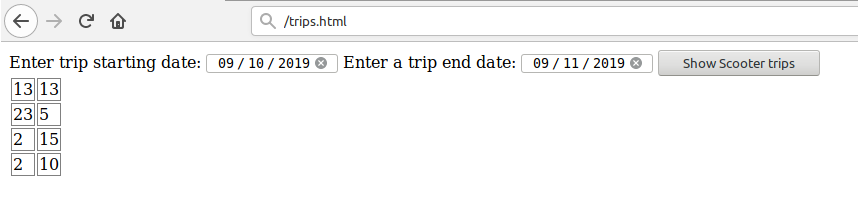

1. JavaScript and Ajax Questionnaire
Enter correct answers in the form at Plussa.
Enter correct answers in the form at Plussa.
This exercises involves using .postMessage() to send messages from an iframe to the parent document. You are to write a simple 'service' in reverser_service.html that takes a string, reverses it and sends it as a message to the document that contains reverser_service.html as an iframe.

user_actions.html is given to you so you can test your solution with that. Note that you should not rely on any modifications on user_actions.html, the grading will be done using the given file. The messages should have a payload attribute that contains:
#toBeReversed reversed if the #reverser form was submitted.#clearInput was clicked.
//Example message
msg = {};
msg.payload = 'elloH'; // (1) #toBeReversed contained 'Hello' and user submitted #reverser
msg.payload = 'INPUT CLEARED' // (2) User clicked #clearInput
Note that you can assume that the grader will also have 'lib/jquery-3.2.1.min.js'.
reverser_service.html and create the necessary elements.window.parent.
Write the code inside the HTML file.Add, commit and push your new files and possible changes to the Git as in round 1.
Finally, just copy and paste your GitLab project's URL to Plussa. The file we will check
is exercises/06_javascript_ajax/reverser_service.html.
In this exercise you will be consuming the simplest possible RESTful API, which offers data about rented electric scooter trips. The documentation for the API can be found here (autogenerated by Swagger, by the way).
From the documentation it can be seen that the base URL is bwa-2019-2020.herokuapp.com/v1. This is what URLs of all the request to this API have to start with.
In this API, there is only one API endpoint: /trips, and we will use it. That endpoint is documented on the documentation page too.
The endpoint requires that we use an X-API-key header in our requests. The value used for the X-API-key in this exercise is bwa_2019-2020. In this exercise you also must also use both the startDate and endDate query parameters in your requests. So, an example of a valid request using curl would be:
curl -X GET --header "X-API-Key: bwa_2019-2020" "https://bwa-2019-2020.herokuapp.com/v1/trips?startDate=2019-09-20&endDate=2019-09-21".
There is trip data available from 2017-04-18 to 2019-09-21
Dates have to be in the format YYYY-MM-DD, which is conviniently the format HTML form datepicker element gives them in.
Maximum of 20 trips are returned in the response.
Start by creating new trips.html and trips.js
files. Create an empty HTML5 page and include the jQuery library and your own
JavaScript file after it. For grading you must include the jQuery like this:
<script src="lib/jquery-3.2.1.min.js"></script>
Next, add a form element which contains two date input elements (input type=date):
one with id=startDate, another with id=endDate. For submitting the form add a input type=submit element
with id=search. This form is used to query the API with the
entered dates. The form can look for example like in the image below.
Furthermore, after the form add an empty table element with id=trips to the page. It is used for
adding the trips later on. Example of what the form page would intially look like is shown below.
The grading system uses a headless browser, and its limited abilities require that $.support.cors; is enabled in trips.js when using $.ajax and other AJAX methods. You can do this by adding $.support.cors = true; line in your code before you make any jQuery AJAX calls.
For local testing using $.support.cors isn't necassary. It is in fact discouraged, as the whole $.support has been depracated since jQuery 1.9 (for more information read: jQuery.support). But for this exercise it must be used.
First you need wait for the HTML DOM to be completely loaded and prepared before looking for any DOM elements. Check jQuery examples for document ready.
Now using jQuery, select the form and attach an event listener to submit event. In the handler function remember to prevent the default action so that the page is not reloaded when the form is submitted.
You can use console.log("remarks", somedata); to debug how your code works.
Some useful jQuery functions: on, event.preventDefault, val, jQuery.ajax.
Use jQuery AJAX to request resources from the API. After the jQuery AJAX request has been resolved to a response, that response should include a data object which holds the data received from the API. To see this data, you can for example use Developer Tools in your browser after you console.log the received data in your code. Let's say that the received object is in variable data. The trips, if any were found, are in data as an array that you should loop through to handle each trip.
Next, you will populate the table#trips so that each row of the table holds the required information about one trip. Each line must have two cells, where the first one is the scooterId of the trip, while the second holds the average speed of the trip. An example of the page listing results from a response is shown below. 
You do not have to handle errors in the API requests. However, you should always empty the old table before querying for new data. No data from earlier requests can be present in the table.
Please make sure that you have used the required id:s (startDate, endDate,
search, trips) in correct elements.
Add, commit and push your new files and possible changes to the Git as in round 1.
Finally, just copy and paste your GitLab project's URL to Plussa. The files we will check
are exercises/06_javascript_ajax/trips.html and
exercises/06_javascript_ajax/trips.js.